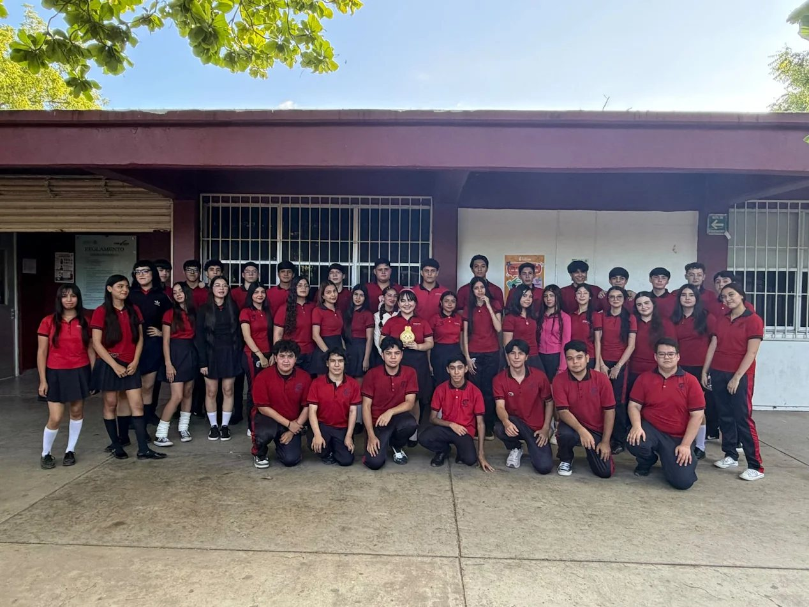
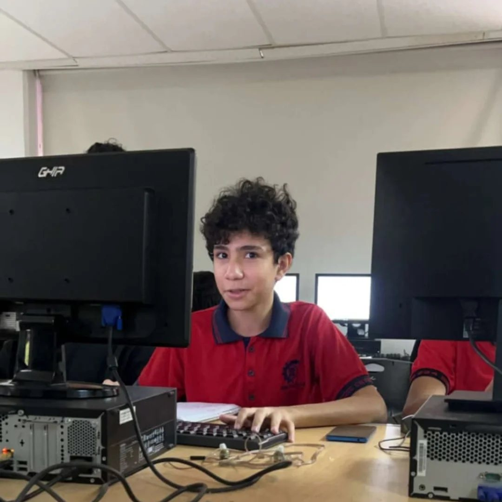
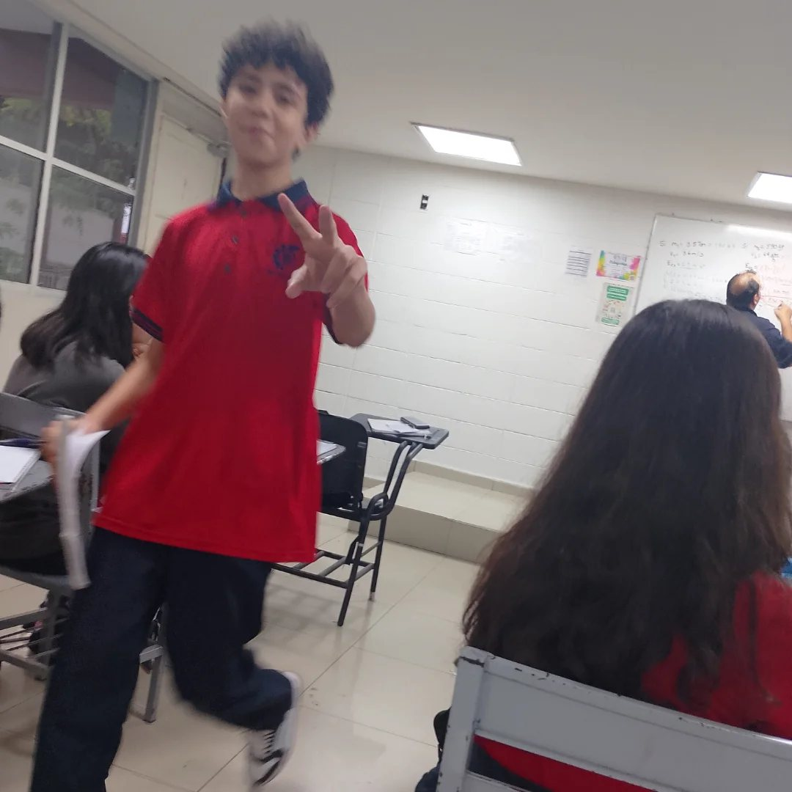

Construye Aplicaciones Web
Aprendemos HTML y CSS para crear páginas y aplicaciones web.
Juan Carlos Camarena Pillado · CBTis 224 · 5.º semestre de Programación
Mi grupo es de quinto semestre de la carrera técnica en Programación del CBTis 224. Compartimos clases, tareas y proyectos, y aprendemos juntos a crear aplicaciones.
| Plantel | CBTis No. 224, Culiacán, Sinaloa |
|---|---|
| Carrera técnica | Programación |
| Semestre | Quinto |
| Grupo | 5I |
| Turno | Vespertino |
| Asignatura de esta página | Construye Aplicaciones Web |



Aprendemos HTML y CSS para crear páginas y aplicaciones web.
Diseñamos programas pensados para celulares y tabletas.
Conocemos las plataformas que se usan para estudiar en línea.
Matemáticas para resolver problemas de áreas y acumulación.
Practicamos el idioma que más se usa en la tecnología.
Ciencia para entender cómo funcionan las cosas que nos rodean.